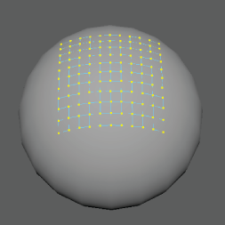
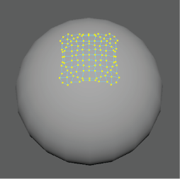

一致选项(Conform Options)
使用
一致(Conform)
命令可以将一个对象的顶点包裹到另一个对象上。使用以下选项可设置选择
“网格 > 一致”(Mesh > Conform)
时发生的情况。
投影(Projection)
沿法线(Along Normals)
将每个选定组件捕捉到激活曲面上的最近点。在以下示例中，沿平面法线将平面的顶点捕捉到球体。

最近点(Closest Point)
将每个组件捕捉到激活曲面上的最近点。在以下示例中，将平面的顶点捕捉到球体上的最近点。

相关主题
使顶点与曲面保持一致
父主题：
“网格”(Mesh)菜单